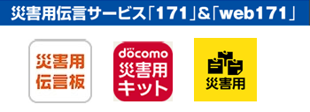
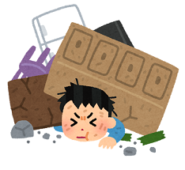

安否確認

家族の安否確認
 家族と連絡をとり、安否を確認してください。 災害発生直後は電話がつながりにくくなります。メールやLINEなどのコミュニケーションツールも活用してください。 また、NTTや携帯電話各社の災害伝言サービスなどを使って自分の安否や居場所などを伝えることも忘れないでください。周囲の人の安否確認
 周囲にけがをしている人、閉じ込められている人、身動きが取れない人などがいないか確認してください。 周囲の人と協力しあって、助かる命をつないでください。エマージェンシーコールによる安否確認
震度５強以上の地震発生時、または必要に応じて、エマージェンシーコールによる安否確認が配信されます。 社員の安全確保のために必要な情報となりますので、必ず返信してください。 ①メール受信の場合 被害無し：空メールを返信 ※件名は消さないでください。 被害あり：メール内のURLから回答 ②アプリの場合 アプリを起動して、安否内容を回答 ③電話の場合 音声ガイダンスに従って回答